MeFace 超表面 3D 人脸识别模组
基于亚波长超表面光场调控技术，以单片 Meta-DOE 芯片替代传统多层 DOE 光学堆栈
一片芯片，替代整个光学堆栈
MeFace 的核心是 Meta-DOE 超表面光学芯片。通过亚波长纳米结构对近红外光场进行 相位、振幅和点阵分布的独立调控，将传统方案中准直镜、分束器、衍射光学元件（DOE） 等多层光学组件的功能集于一体。
技术路线与 iPhone 17 所采用的超表面方案总体接近，在微型化程度与成本控制方面 具备较大优势，能更好服务于国产中高端手机及 IoT 设备市场。

超表面光学设计、加工与算法
超构单元仿真与相位设计
基于 COMSOL / CST 电磁仿真，建立纳米天线单元参数数据库，通过 2π 相位调控实现任意波前整形。
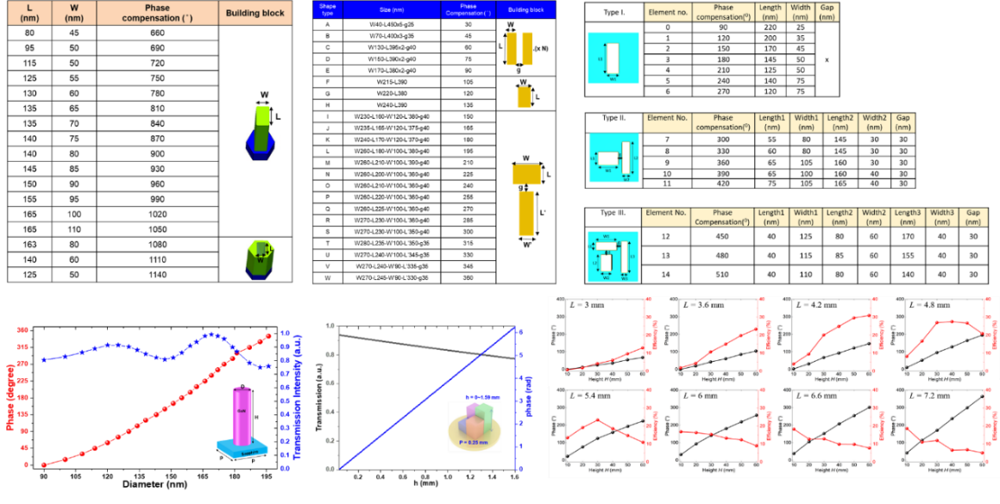
随机点阵生成与相位检索
泊松圆盘采样生成高对比度伪随机散斑点阵，加权 Gerchberg-Saxton 算法实现逆向相位设计。
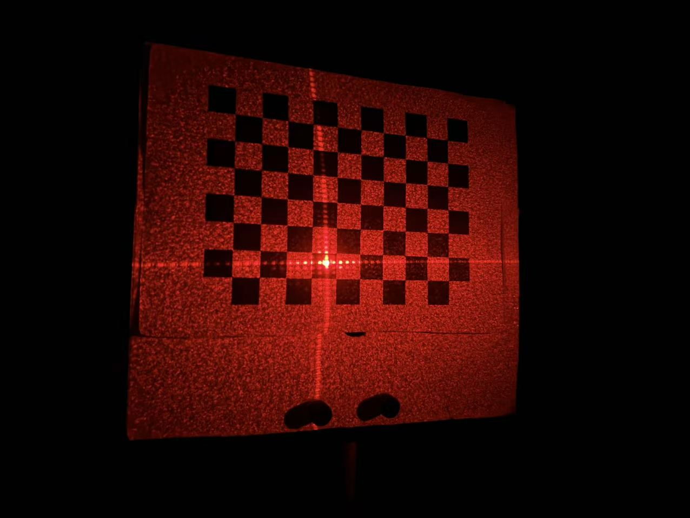
超表面微纳加工工艺
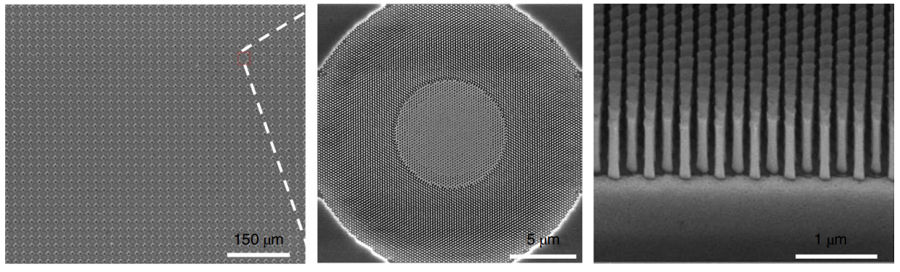

结构光三维重建与活体防伪
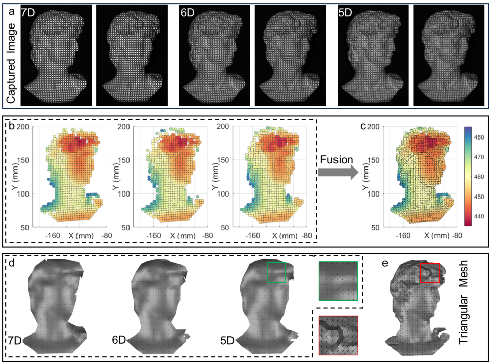
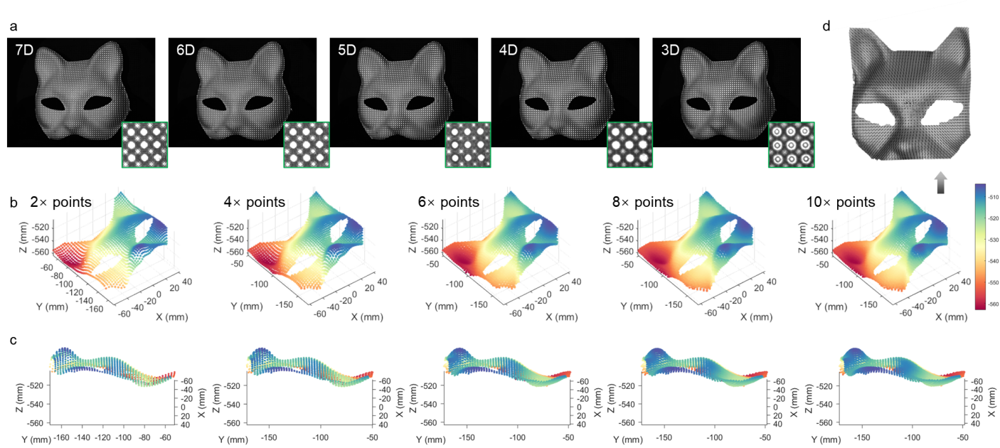
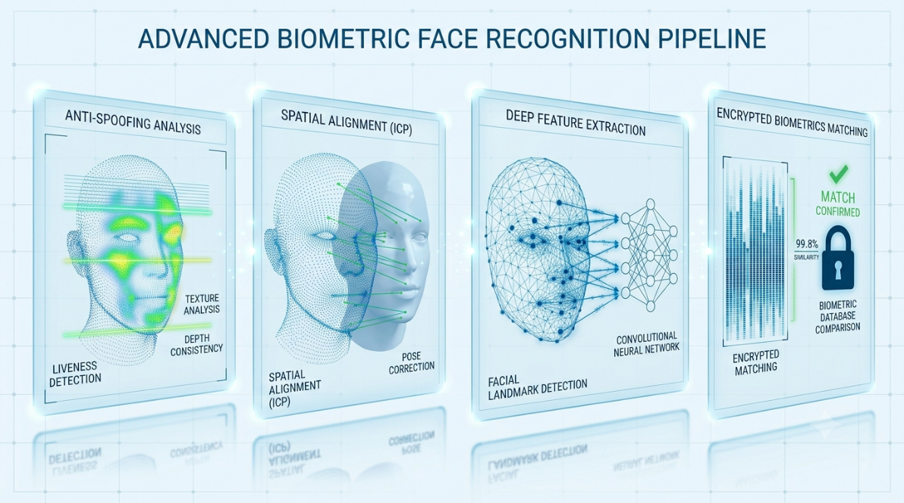
传统方案的体积与成本困境
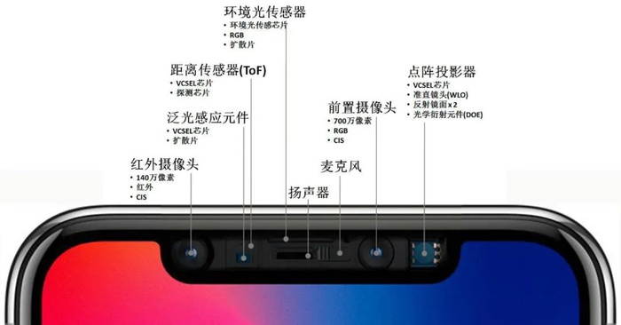
传统 DOE 方案的核心问题
依赖多片折射透镜组与 DOE 的精密组合，光学堆栈复杂。3D 模组挤占宝贵的屏幕区域， 2–5mm 的模组厚度成为手机轻薄化的核心阻碍。单个模组成本高达 100–200 元， 限制在中低端机型中的普及。
超表面（metasurface）方案：用一张极薄的玻璃/硅片替代一串厚镜片。 表面数百万个纳米柱实现对光的精准调控，如同传统透镜棱镜一般。
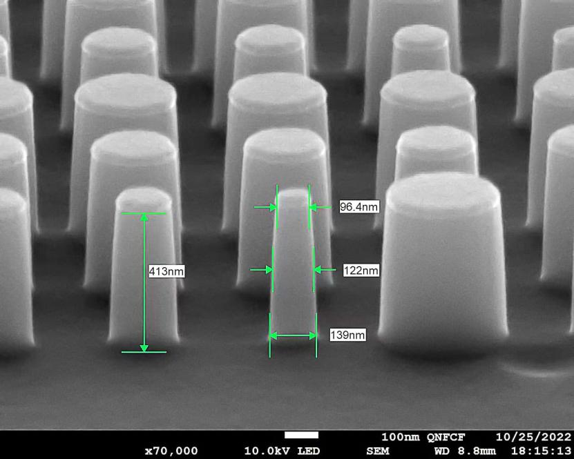
MeFace vs iPhone Face ID
在模组尺寸、点阵密度、制造成本等关键指标上实现系统性超越
| 对比维度 | iPhone Face ID (传统DOE方案) | MeFace (超表面方案) | 提升 |
|---|---|---|---|
| 模组 Z 轴厚度 | 3.0 – 3.5 mm | < 1.5 – 2.0 mm | 厚度减半 |
| 光学组件数量 | 多片透镜 + DOE | 单片/双层超透镜 | 减少 70%+ |
| 投射红外点阵 | > 30,000 点 | ≥ 45,000 点 | 密度 +50% |
| 衍射效率 | ~60% – 70% | 75% – 85%+ | 效率提升 |
| 深度分辨率 | ~50 μm | ~30 μm | 精度更高 |
| 组装对准要求 | < 1 μm 苛刻公差 | 晶圆级一次成型 | 良率显著改善 |
| DOE 芯片成本 | 7 – 21 元 | 0.35 – 1.4 元 | 降低 95% |
| 模组总 BOM 成本 | 42 – 108 元 | 28 – 63 元 | 降低 ~30% |
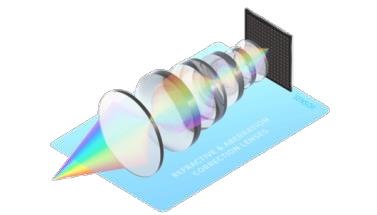
晶圆级光学封装
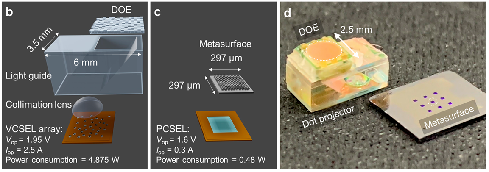
超薄紧凑投射模组
选用 940nm VCSEL 作为泵浦光源，通过晶圆级光学封装（WLO）与亚微米级主动对准技术， VCSEL 与超表面芯片高精度集成，形成超薄紧凑投射模组。
配合窄带滤光片的全局快门红外相机，构建固定基线 3D 采集系统。 频闪硬件同步控制，极低功耗下实现高抗动态模糊的精准三维重构。
四大产品优势
极致微型化 · 颠覆性形态创新
突破性毫米级减薄，Z 轴空间占用大幅削减。精度无损前提下为 AR 眼镜、智能穿戴、超薄笔记本等空间敏感终端赋予 OEM 更高工业设计自由度。
低功耗 · 极简集成
系统级功耗优化，降低发光源超负荷驱动需求。标准硬件 + SDK + 深度 API 一体化交付，适配 Android / Linux / RTOS 多平台。
硬件级安全 · 多维防伪
天然免疫 2D 伪造攻击，结合多帧深度一致性校验与材质反射约束，精准识别高仿真 3D 面具。复杂环境下维持稳定高信噪比识别。
B2B 交付友好 · 加速商业化
配备专业 FAE 团队，从结构设计评测、光学调优、产线标定到系统联调全生命周期支持，帮助客户量产周期缩短 30%–50%。
全链路系统级护城河
从光学设计到量产封装，软硬件深度耦合的五大核心壁垒
超表面相位设计
逆向光束整形、DFM 容差建模、高衍射效率点阵输出
纳米加工工艺
高纵横比刻蚀、宽窗口工艺控制、全流程在线 AOI 检测
系统标定算法
计算光学"软硬共设计"、高阶畸变补偿、秒级产线标定
封装对准工艺
亚微米级主动对准、全温区应力控制、模块化标准接口
知识产权布局
3 项核心专利申请中，覆盖光学结构、标定与封装
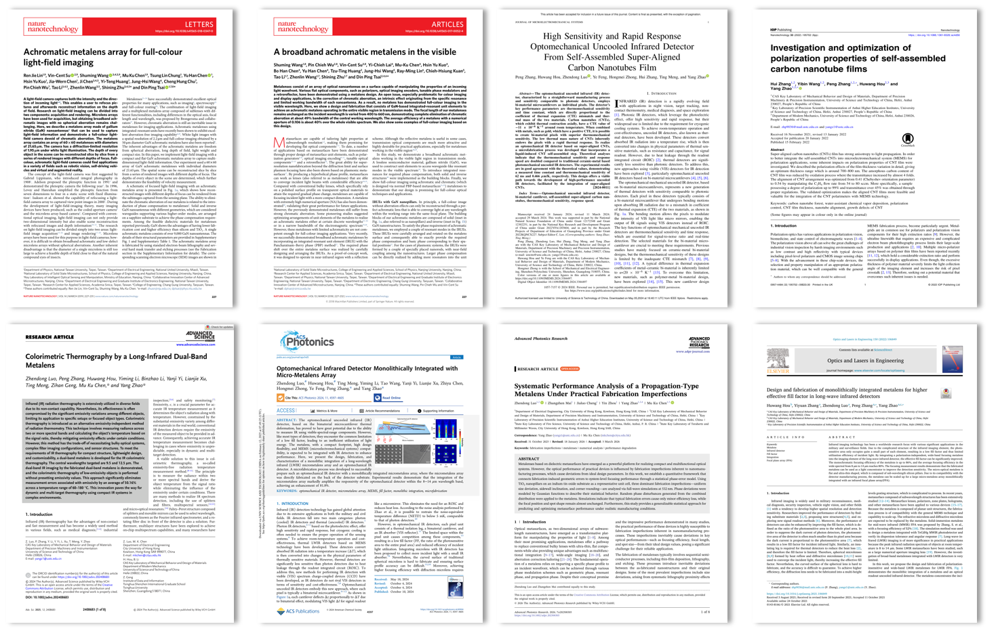
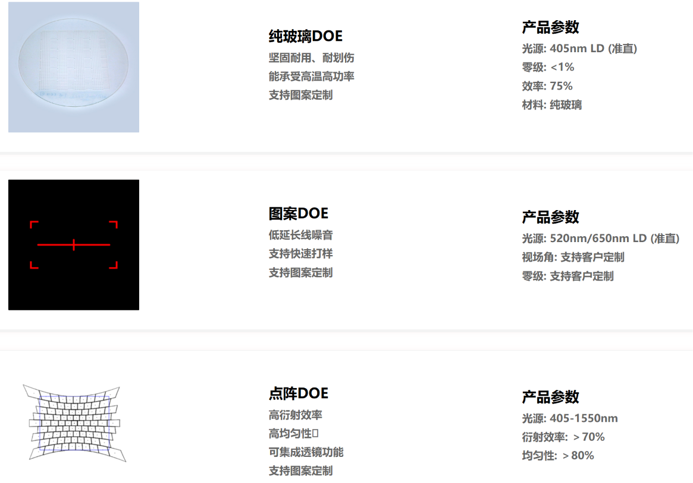
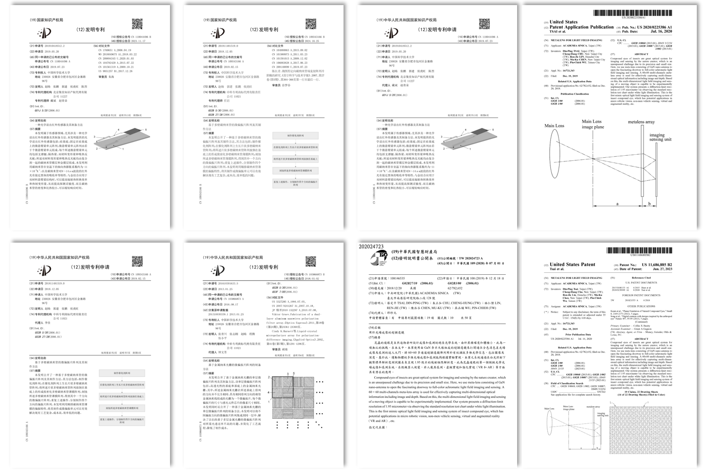
稳健商业化 + 前沿技术储备
Phase 1 · 2026–2027
超表面结构光模组送样流片 → 旗舰限定版试点导入。聚焦手机前摄 3D 人脸识别市场，完成 MVP 验证与首个量产试点。
当前阶段Phase 2 · 2028–2029
主力旗舰全系导入扩容，VR/AR 近眼显示与感知组件出货。DUV 规模化降本驱动单品成本从 1.44 → 0.86 元。
Phase 3 · 2030+
偏振屏下 Face ID（Polar ID）、多光谱识别、车载 LiDAR / DMS、工业医疗 3D 成像等泛 3D 视觉场景全面拓展。